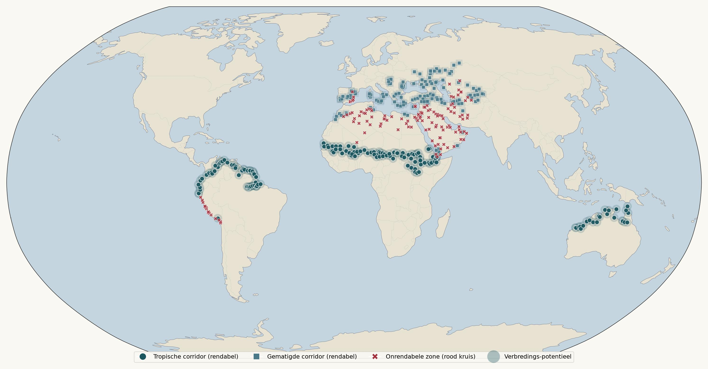
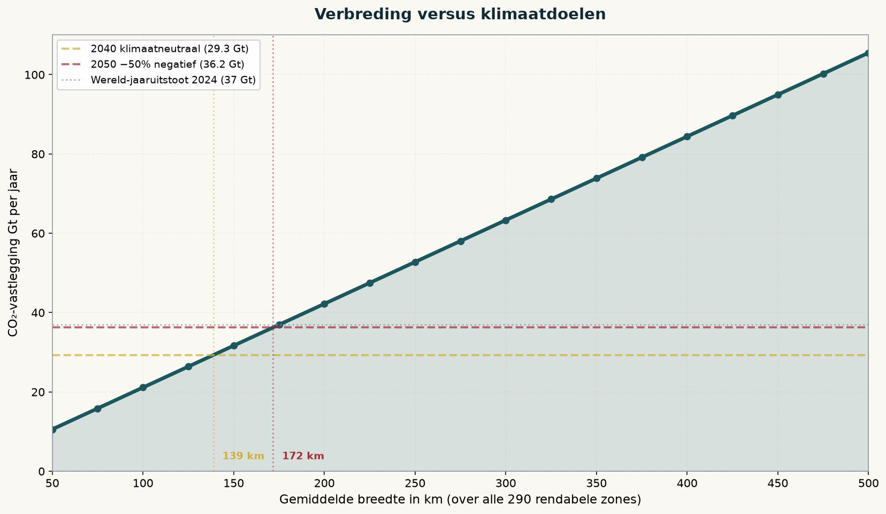
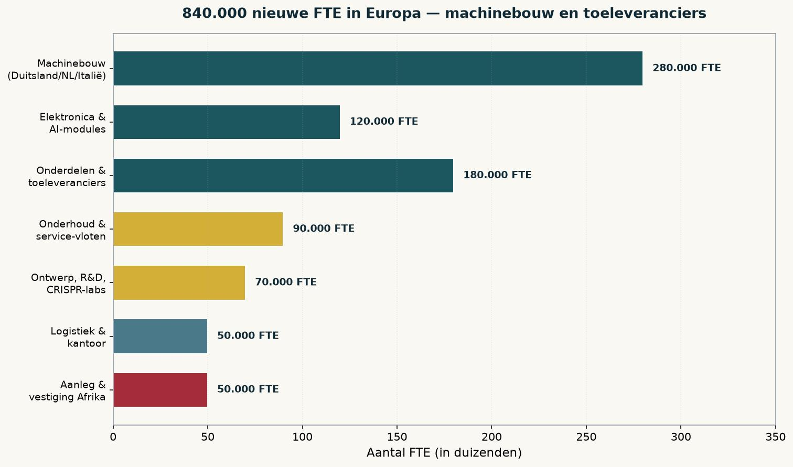

Het klimaatprobleem heeft geen ideologische oplossing meer nodig. Het heeft een gedifferentieerd bouwplan nodig, opgebouwd uit hectaren, tonnen CO₂ en euro's per ton. Deze krant deed die rekensom voor 425 corridor-segmenten van 100 km rond de Sahara, langs de Andes, over Noord-Australië, door Anatolië en langs de Russische en Kazachse steppen. Wat eruit rolt, is een strategie die niemand tot nu toe heeft geformuleerd omdat zij drie taboes tegelijk breekt: zij verklaart welke gebieden onrendabel zijn en dus overgeslagen moeten worden, zij vraagt geen offer maar biedt 840.000 nieuwe banen in Europa, en zij geeft asielzoekers een concreet toekomstperspectief in Afrika dat onze eigen democratie hen niet kan bieden.
De vraag is niet "kunnen we het", maar "waar en hoe breed"
Vijftien jaar klimaatdebat heeft de discussie steeds bij dezelfde vraag gehouden — hoeveel moeten we minderen, hoe snel, en wie draagt de kosten. De omgekeerde vraag komt zelden aan bod: hoeveel CO₂ kan de aarde met bestaande, industriële middelen weer opnemen, en wat kost dat per ton? Deze krant deed die berekening op 425 concrete plekken, elk 100 kilometer lang, opgeknipt in secties van 100 kilometer breed. Elk segment werd doorgerekend op temperatuur, neerslag, dauw, veld-grootte en machine-inzet.
De uitkomst is confronterend eenvoudig. Van de 425 zones blijkt slechts 290 werkelijk rendabel bij een marktprijs van €40 per ton CO₂. De rest — 135 zones — heeft een kostprijs boven de €40. Die krijgen op de kaart een rood kruis. Zij zitten allemaal in te droge of te versnipperde gebieden: het Egyptische binnenland, de Levant, delen van het Arabisch Schiereiland, en de meest versnipperde delen van Zuid-Europa.
Verbreding van de rendabele zones levert meer klimaat-impact per geïnvesteerde euro dan uitbreiding naar onrendabele zones. Dat lijkt vanzelfsprekend. Toch heeft geen enkele klimaatorganisatie het ooit zo geformuleerd.

Het antwoord is gedifferentieerd — 30 km hier, 600 km daar
Klimaatplannen willen graag met één getal spreken. Deze studie kan dat niet. De fysieke maximum-breedte per corridor varieert met een factor twintig: van 30 kilometer in Zuid-Europa (versnipperd door dorpen, olijfgaarden, wijngaarden en zee) tot 600 kilometer in de Australische Top End (leeg tot aan de horizon, met Aboriginal-medewerking). Elke corridor krijgt precies zoveel breedte als zijn geografie toelaat.
| Corridor | Max breedte | Max CO₂ Gt/jr | Kostprijs | Beperkende factor |
|---|---|---|---|---|
| Noord-Australië | 600 km | 13,4 | €10,53 | Top End leeg, ondersteund door Aboriginal Land Use Agreements |
| Sahara Coast-to-Coast | 500 km | 24,9 | €14,49 | Sahara-zuidrand Mauretanië tot Djibouti, Great Green Wall bestaat al |
| Zuid-Amerika Andes-Amazone | 400 km | 29,1 | €7,50 | Andes-voetheuvels; niet in regenwoud |
| Zuid-Rusland Steppes | 400 km | 5,1 | €17,68 | Sovjet-erfenis grote blokken |
| Arabisch Schiereiland | 400 km | 0,8 | €23,24 | Water is beperkende factor, ondanks Rub-al-Khali |
| Centraal-Aziatische Steppen | 500 km | 2,8 | €26,44 | Kazachse steppen; weinig bewoning |
| Noord-Sahara (Marokko-Egypte) | 300 km | 0,8 | €32,62 | Politieke fragmentatie Libië, Egypte-woestijn |
| Anatolië-Kaukasus-Iran | 200 km | 2,3 | €20,74 | Hoogland-versnippering, bewoning in valleien |
| Balkan Steppen-rand | 80 km | 0,6 | €22,06 | Marginale plateaus tussen landbouw |
| Iberisch Marginaal Land | 60 km | 0,5 | €29,83 | Versnipperd door dorpen |
| Levant | 50 km | 0,09 | €28,59 | Politieke instabiliteit, dichte bewoning |
| Zuid-Europa Mediterraan | 30 km | 0,4 | €30,61 | Zwaar versnipperd door dorpen, olijfgaarden, zee |
| TOTAAL WERELDWIJD | varieert | 80,8 | gew. €14,91 | Fysiek maximum wereldwijd |
De gemiddelde kostprijs over alle 290 rendabele zones bij basisbreedte 100 km is €14,91 per ton CO₂. Zuid-Amerika loopt daar met €7,50 het gunstigst uit; Zuid-Europa met €30,61 het duurst. Dat is geen politieke keuze maar fysica: fotosynthese-efficiëntie is temperatuur × licht × water. In de tropen zijn alle drie het jaar rond aanwezig, in Europa slechts 5 tot 7 maanden.
De klimaatdoelen 2040 en 2050 — met marktprijzen die niemand hoeft weg te praten
Als de wereldwijde CO₂-uitstoot volgens realistisch reductie-beleid van 37,4 Gt in 2024 daalt naar 29,3 Gt in 2040 en 17,5 Gt in 2050, dan moet onze vastlegging in 2040 minstens die 29,3 Gt compenseren om klimaatneutraal te zijn. Voor 2050 minstens 25% negatief moet er 26,9 Gt per jaar teruggehaald worden; voor 50% negatief 36,2 Gt per jaar.

Onze fysieke maximum-capaciteit is 80,8 Gt per jaar — dat is 84% méér dan zelfs het meest ambitieuze doel voor 2050. Er zit dus flinke veiligheidsmarge in het plan: reserve voor droogtejaren, machine-uitval, of politieke tegenvallers.
De marktprijs voor CO₂-verwijdering staat vandaag tussen €40 en €80 per ton. Deze marktprijs blijft in het plan gehandhaafd — geen prijsdruk, geen dumping. Bij een marktprijs van €40 is de netto marge over de 290 zones €25,09 per ton; bij €80 wordt dat €65,09 per ton. Wat overblijft aan winst is aanzienlijk maar niet extatisch: €529 mrd per jaar bij €40, €1.373 mrd bij €80. Voldoende om alle machines te bouwen, alle infrastructuur aan te leggen en Afrika een structurele economie te geven — en de host-landen hun rechtmatige aandeel in de wereldwijde klimaatoperatie.

| Marktprijs | Marge/ton | Winst bij basis 100 km | Winst bij fysieke max |
|---|---|---|---|
| €40/tCO₂ | €25,09 | €529 mrd/jaar | €2.027 mrd/jaar |
| €60/tCO₂ | €45,09 | €951 mrd/jaar | €3.643 mrd/jaar |
| €80/tCO₂ | €65,09 | €1.373 mrd/jaar | €5.259 mrd/jaar |
Hoe breed moet elk gebied worden?
De optimale uitrol volgt het rendement per stap. Elke 100 kilometer verbreding wordt gerangschikt op winst per hectare — en de meest winstgevende komt eerst. Het antwoord is niet "overal 175 km". Het is: Zuid-Amerika eerst tot volle 400 kilometer, dan Noord-Australië tot 400 km, dan Sahara Coast-to-Coast tot 500 km. Zuid-Europa krijgt slechts zijn fysieke 30 km — of nul, als het niet nodig is.

Zuid-Amerika Andes-Amazone: volle 400 km — levert 29,1 Gt/jr, €527 mrd winst @€80.
Noord-Australië: 100 km — levert 2,2 Gt/jr, €155 mrd winst @€80.
Sahara Coast-to-Coast: pilotfase 15 km — infrastructuur en Great Green Wall-coördinatie.
Alle andere corridors: nog niet actief. Reserve.
Zuid-Amerika: op volle 400 km — 29,1 Gt/jr.
Noord-Australië: uitgebreid naar 400 km — 8,9 Gt/jr.
Sahara: nog steeds als reserve, activering na 2050 mogelijk.
Alle European Greenery-corridors: allemaal nog 0 km. Overbodig voor deze doelen.
840.000 nieuwe banen in Europa — dit is geen bezuinigingsverhaal
Het opvallende aan dit klimaatplan is dat het geen bezuinigingsverhaal is en geen offer vraagt van de Europese burger. Het is een industriële expansie op een schaal die Europa sinds de wederopbouw niet meer heeft gezien. De machines — 6 meter breed, 1000 meter per uur, 300 liter brandstof per uur, met AI-conditiebewaking en satelliet-verificatie — worden gebouwd in Duitsland, Nederland, Italië en Frankrijk. De elektronica en AI-modules komen van Zwitserse en Zweedse toeleveranciers. De onderdelen komen van tienduizenden Europese MKB-bedrijven.
Rond 98.000 machines wereldwijd nodig bij fysiek maximum, met vervangings-cyclus van vijf jaar — dat betekent 20.000 machines per jaar in continue productie. Elke machine kost circa €875.000 aan CAPEX plus €25.000 aan AI-modules. Circa 40% daarvan gaat naar arbeidsuren: ontwerp, assemblage, elektronica, test, service. Bij een Europees gemiddeld loonkosten-niveau van €70.000 per FTE per jaar levert dat 840.000 nieuwe banen op.

Machinebouw (Duitsland, Nederland, Italië): 280.000 FTE — hoofdassemblage, chassis, motoren, hydrauliek.
Elektronica en AI-modules: 120.000 FTE — sensors, satelliet-verbinding, verificatie.
Onderdelen en toeleveranciers: 180.000 FTE — verspreid over duizenden Europese MKB-bedrijven.
Onderhoud en service-vloten: 90.000 FTE — technici die tussen Europa en de corridors reizen.
Ontwerp, R&D en CRISPR-labs: 70.000 FTE — biotechnologische verbetering van Juncao en Moringa.
Logistiek en kantoor: 50.000 FTE — coördinatie tussen Europa en de host-landen.
Aanleg-teams in Afrika: 50.000 FTE Europees — plus honderdduizenden lokale banen in de host-landen zelf.
Deze 840.000 banen zijn structureel, niet cyclisch. Zij bestaan zolang het klimaatprogramma bestaat — minstens 30 jaar. Zij zijn regionaal gespreid over alle EU-lidstaten met industriële capaciteit. En zij vragen geen omscholing van mensen die vandaag al in de auto-industrie, staalproductie of maakindustrie werken.
Asielzoekers als partners — een toekomstperspectief dat onze democratie niet kan bieden
De grootste politieke waarheid die dit klimaatplan blootlegt, is er een die Europa liever niet uitspreekt: onze "democratie" biedt honderdduizenden asielzoekers geen toekomstperspectief. Zij komen aan in tenten en containers, wachten jaren op procedures, mogen niet werken, en als zij dan een status krijgen, is de eerste generatie kansloos op de arbeidsmarkt en de tweede vervreemd van beide culturen. Dit is geen falen van intenties — dit is een structureel falen van de Europese samenleving zoals zij vandaag functioneert.
De Wereld-Gordel biedt iets wezenlijk anders. In Mauretanië, Mali, Niger, Tsjaad, Sudan, Ethiopië, Colombia, Peru en Bolivia ontstaan de komende 25 jaar honderdduizenden banen — machinisten, technici, satelliet-analisten, verificateurs, coördinatoren, plantbiologen, waterbeheerders. De banen zijn nieuw, hoogwaardig, ecologisch zinvol en betaald op wereldmarkt-niveau met een fatsoenlijke uplift boven de lokale lonen. Zij zijn precies datgene wat de eerste-generatie migrant zoekt en in Europa zelden vindt: werk met betekenis, in de eigen streek, in de eigen taal, met perspectief op een carrière en een gezin.
Wie in Mauretanië een goede baan heeft bij het klimaatprogramma, hoeft niet naar Duitsland. Wie in Mali een technisch beroep leert met een carrièrepad, hoeft niet in een Berlijnse container. Wie in Colombia bij het CO₂-programma werkt, hoeft niet naar Madrid.
Dit is geen anti-migratie-argument. Dit is een pro-toekomst-argument. Voor mensen die vandaag als asielzoeker in Europa vastzitten — vaak gedwongen door omstandigheden die zij zelf niet gekozen hebben — biedt de Wereld-Gordel wat onze arbeidsmarkt en onze bureaucratie hen structureel weigeren te bieden: een toekomst. Terugkeer wordt dan geen deportatie, maar een aanstelling. Wie vandaag in Ter Apel of Nauen zit, kan morgen technisch specialist zijn in Nouakchott of Djibouti bij een Europees geleid programma.
Europa's arbeidsmarkt en asielsysteem bieden de eerste-generatie asielzoeker vrijwel niets: geen recht op werk in de wachtjaren, minimaal loon na status, geen sociaal kapitaal om carrière te maken, en de tweede generatie vervreemd van zowel herkomstland als gastland.
De Wereld-Gordel biedt in de streek van herkomst: een technische baan bij een internationaal programma, een fatsoenlijk loon, opleiding on the job, en een carrièrepad dat over 20-30 jaar loopt. Met behoud van familie, taal en cultuur. Met eigenaarschap over het eigen leven.
Wat honderdduizend Europese sociaal werkers en tolken niet kunnen bereiken, bereikt het klimaatprogramma vanzelf.
Wat rest — 135 rode kruisen op de kaart
De 135 zones die zelfs bij €80 per ton onrendabel blijven, verdienen ook expliciete vermelding. Zij liggen concentraat in de droogste, meest versnipperde gebieden: Egyptisch binnenland, Syrisch en Iraaks hoogland, Jemenitisch bergland, Rub-al-Khali. Fysiek gewoon te droog. Politiek te instabiel. Landschappelijk te versnipperd. Op de wereldkaart zijn dit de rode kruisen. Zij worden overgeslagen. Punt. Niemand hoeft dit weg te praten, niemand hoeft er politieke energie in te steken.
Ook Levant, Zuid-Europa Mediterraan, Iberisch Marginaal Land en Balkan Steppen-rand zijn technisch mogelijk maar economisch marginaal en klimaatpolitiek nauwelijks noodzakelijk. Voor 2040-neutraal en 2050 −50% zijn zij niet nodig. Zij zijn slechts optie als tegenvallers in de belangrijkste corridors zich opstapelen.
Het geopolitieke evenwicht
Deze strategie heeft een geopolitiek gevolg dat ver reikt: de klimaatoplossing zit in de tropen, niet in Europa. Rijke koude landen (EU, VK, VS, Japan, Zuid-Korea) betalen via de €40-€80 marktprijs voor de vastlegging, maar de vastlegging zelf gebeurt in Afrika, Zuid-Amerika en Noord-Australië. Dit is de grootste noord-zuid financieringsstroom uit de geschiedenis, gedwongen door fysica en niet door goede wil.
Politiek maakt dit een nieuwe architectuur nodig. De Afrikaanse Unie coördineert de Sahara-corridor over 12 landen. CELAC beheert de Zuid-Amerikaanse corridor. Het Commonwealth ondersteunt Noord-Australië. De EU financiert via haar carbon-marktbeleid — maar heeft geen operationele of morele voortrekkersrol. Dat verandert de machtsbalans wereldwijd.
Wat dit is, en wat het niet is
Dit is geen utopie en geen technofix. Het is een gedifferentieerd, doorgerekend investeringsvoorstel voor een concrete klimaatoperatie op 290 rendabele zones. Het is technisch haalbaar met bestaande technologie — Juncao en Moringa groeien vandaag al in de doelgebieden, de machines zijn een schaal-opvoering van bestaande landbouwtechniek, satelliet-verificatie bestaat sinds tien jaar. Het is economisch rendabel bij een marktprijs die vandaag al gehaald wordt in de EU ETS.
Het is politiek moeilijk omdat het drie taboes tegelijk breekt. Het zegt dat delen van de klimaatinzet in Europa (Zuid-Europa Mediterraan, Iberisch, Balkan) zinloos zijn en overgeslagen moeten worden. Het positioneert klimaatbeleid als een groei-industrie in plaats van een verlies-industrie. En het schetst een terugkeer-perspectief voor migranten dat expliciet erkent dat onze democratie hen structureel geen toekomst biedt.
Deze krant vindt het tijd voor die drie taboes. De rekensom staat. De machines kunnen worden gebouwd. De landen willen. Wat rest is de politieke moed om differentiatie boven consensus, industrie boven bezuiniging, en eerlijkheid over migratie boven zelfmisleiding te kiezen.
Open Vizier · Editie Klimaat · Juli 2026 · Jacobus van Merksteijn · Malta